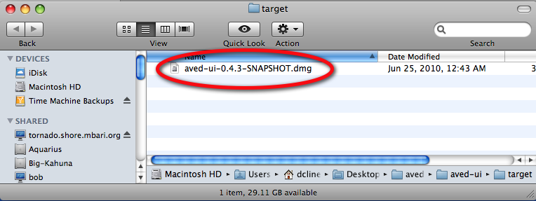
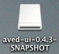

AVEDac
Copyright 2010 Monterey Bay Aquarium Research Institute. All
rights reserved.
http://www.mbari.org
About AVEDac
In order to study the distribution and abundance of oceanic animals,
MBARI uses high-resolution video equipment on remotely operated
vehicles. Quantitative video transects (QVTs) supplant traditional net
tows to assess the quantity and diversity of organisms in the water
column. QVTs are run from 50 m to 4000 m and provide high-resolution
data at the scale of the individual animals as well as their natural
aggregation patterns. However, the current, manual method of analyzing
QVTs is labor intensive and tedious.
For more information about the AVEDac project, see http://www.mbari.org/aved
AVEDac was developing to assist this process by
automated the
detecting marine organisms visible in the videos. Video frames are
processed with a neuromorphic selective attention algorithm. The
candidate objects of interest are tracked across video frames using
linear Kalman filters or Nearest Neighbor algorithms. If objects can be
tracked successfully over
several frames, they are labeled as potentially interesting and marked
in the video frames and saved to a XML-formatted file. The plan is that
the system will enhance the
productivity of human video annotators and/or cue a subsequent object
classification module by marking candidate objects. The software for
this automated detection and tracking is called mbarivision and can
be found, along with the code for this graphical interface) at http://avedac.google.code
Once
events are detected in mbarivision, they are written to a
AVEDac events XML file. This graphical interface is designed for
editing the mbarivision generated events.
Currently, the
only editing
cability is to only delete or combine events. However, more complex
functions may be added in the future such ass adding new events, as
well as the ability to run mbarivision from this graphical interface
(execution is now only through command-line).
For this tool to be useful, you need the event XML file
generated by the AVEDac event detection software mbarivision and the original
video processed used by mbarivision
to generate the XML file as specified in the XML SourceMetadata
element.
Please note that this tool is not an XML
editor and does not
display the raw XML data. Open the XML file in your favorite XML editor
to see all of the XML data. The main purpose of this tool is for
editing events and running the classifier on detection events found by mbarivision.
Installation
Requirements:
- Java
1.5 or higher. You can download Java from http://www.java.com if
you don't already have it.
- Java Advanced Imaging
Binary version 1.1.3 for Linux/MacOSX from here:
- Java
Advanced Imaging Image I/O Tools for Linux/MacOSX from
here:
- Transcode
software. Transcode is used to convert the video into individual
frames. The instructions for installing transcode depend on the
computer you are running on.
- If you are running
this on a Mac,
transcode can
be downloaded from: http://transcode.darwinports.com/.
- This
requires a tool called Darwinports, and if you dont have Darwinports
installed, you will need to install it first before
installing transcode by downloading it from here: http://darwinports.com/.
Installing darwing ports requires X11, Xcode Tools, and changing your
~/.profile. Detailed instructions for installing this can be found
here: http://darwinports.com/install.
- If you are running this on Linux,
transcode can be downloaded from various RPM sources, or installed from
source code from: http://www.transcoding.org/.
A word to the wise - this is not an easy tool to build and install from
source because it has many dependent libraries. Install it from RPM to
simplify your life.
- Matlab Compiler Runtime (MCR)
# MCRInstaller.dmg
Running
This
is packaged as an executable jar. However, it also has shared
libraries that are used in the classifier.
The
instructions for running depend on the
computer you are running on.
- If you are
running this on a Mac,
the executable jar, and associated shared libraries are on a disk image
file.
- Install the disk image by
double clicking on the disk image file. For example, double
click on aved-ui-0.3.4-SNAPSHOT.dmg
file.

- The
image mounts as a new volume on your desktop. Double click on this
virtual drive.

- Then
drag the contents into your Applications folder. TODO: add the snapshot
image of the application and package.
- Run
by double clicking on the application
- TODO:
Add an image of the application icon
Credits
The design of this tool would not be possible
without the following
open source software. Thank you to all of the following contributors:
Abeille Forms Designer
https://abeille.dev.java.net/
Browser Launcher
http://browserlaunch2.sourceforge.net/Also,
the team would like to thank the designer of the classifier, Marc'Aurelio
Ranzato.
M. Ranzato, P.E. Taylor, J.M. House, R.C. Flagan, Y. LeCun and P. Perona. Pattern Recognition Letters
Volume 28, Issue 1, 1 January 2007, Pages 31-39. doi:10.1016/j.patrec.2006.06.010
If you use this software in your research,
please do cite this work: